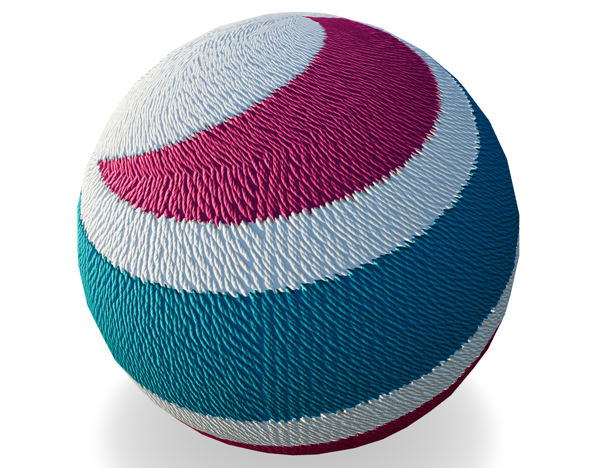

MaterialX Learn
You have reached the home of "MaterialX Learn".
The intent of this site is to provide learning materials as well as complementary utilities for working
with
 MaterialX
MaterialX
Updates

- The property panel for definitions has been revamped to be more 3D editing and mobile friendly. See the design document for more information.
- Graphic Design asset documentation is now available for the site.
- The shader preview utility workflow has been improved including adding support for generation of various shader targets including: OSL, GLSL, MetalSL, and Vulkan.
- The definitions reference is now in sync with 1.39 and includes a "Node Usage" notebook with code to determine the node usage in nodegraph implementations and which implementations use a given node.
Start of new modular utilities using MaterialX Javascript modules: Core and ShaderGen. Latter is now exposed as a public module. Utilities including syntax hilighting, graph generation and code generation, and 3D viewer. Viewer requirements have been a driver for core updates.
Definition library comparisons are now available under the "Reference->Library Revisions" menu. This includes comparisons of the standard library from 1.38.0 to 1.38.9. The latest version denotes the start of a NPR library and the inclusion of the OpenPBR reference implementation.
Tutorials and Workflows
New additions have mostly been centered pipeline / Web development
including glTF/JSON interop and glTF
incorporation into the QuiltiX
editoras well as additional OpenUSD support utilities.

Start of interactive previews for references starting with glTF pbr. Improvements to glTF utility viewer support also added including drag and drop of glTF and environment files.
Working group information for a new procedural texture glTF (JSON) specification can be found for members of the Khronos glTF PBR working group.
Additional work to improve supported graphs, usability and performance of the ASWF MaterialX web viewer can be found here. (OpenPBR graph shown in viewer below) (Note: Graphs used to create reference images are now previewable in the web viewer)
News
MaterialX 1.39 Sync The next major version release will 1.39. As such, the site will now be tracking that development branch.
Read about the latest updates for Khronos glTF shading networks in the new presentation page. Past and future presentations and videos will be added here.
This site has a tagged release which sync's with the official MaterialX 1.38.9 release. Includes:
- Standard library updates and the recent start of an NPR library.
- Inclusion of OpenPBR MaterialX reference implementation (See reference section).
Development Updates
Extraction and creation of PyPi Python packages with corresponding documentation with Jupyter notebook examples available for general use:
- MaterialX / glTF
bi-directional
translation package

- MaterialX XML / JSON bi-directional converter package
Learn

Learn
MaterialX concepts and interfaces and usage
Reference
Reference for types, color management and node library C++ API
C++ API
 Library User Guide
Library User Guide

Utilities
Utilities to aid with manipulating and enhancing MaterialX
Develop
Developing using MaterialX through examples and tutorials
Workflows
Articles and helpers related to various workflows